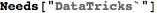
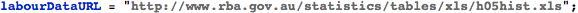
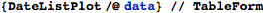
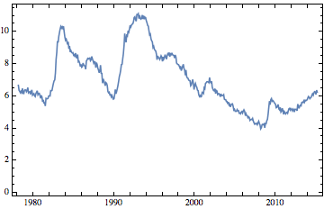
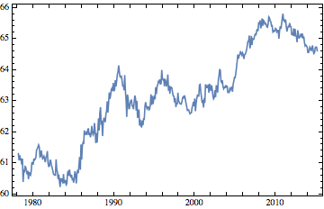
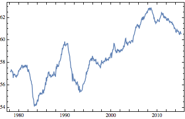

DataTricks
DataTricks is a simple Mathematica package for extracting data from Excel workbooks. It does not depend on ExcelLink, and improves upon the built-in Import command in several ways:
1. There are no limits to the size of the workbook that can be imported;
2. All workbook formats readable by Excel can be imported;
3. Workbooks can refresh their sources before the data are extracted; and
4. Excel ranges and Named ranges can be used to select data.

Example 1 : A Simple Table
The simplest way to import data is to call importExcel[...] with the file name, sheet name, and an Excel range reference:
| GDP (QoQ) | 14Q4 | 0.6 |
| Service sector output (3Mo3M) | 3m to January | 0.8 |
| Industrial production (3Mo3M) | 3m to January | 0. |
| Manufacturing output (3Mo3M) | 3m to January | 0.4 |
| GfK Consumer Confidence | March | 4. |
| Retail sales volumes (YoY) | February | 5.7 |
| Fixed investment (QoQ) | 14Q4 | -0.6 |
| Goods exports (volumes) (MoM) | January | -3.1 |
| Goods imports (volumes) (MoM) | January | -4.8 |
| Current account balance, £bn | 14Q4 | -25.3 |
| Business Investment (QoQ) | 14Q4 | -0.9 |
To make code more readable and maintainable, named ranges can be used in place of hard-coded range formats. And when just a single range is needed, the sheet and range can be given directly:
| GDP (QoQ) | 14Q4 | 0.6 |
| Service sector output (3Mo3M) | 3m to January | 0.8 |
| Industrial production (3Mo3M) | 3m to January | 0. |
| Manufacturing output (3Mo3M) | 3m to January | 0.4 |
| GfK Consumer Confidence | March | 4. |
| Retail sales volumes (YoY) | February | 5.7 |
| Fixed investment (QoQ) | 14Q4 | -0.6 |
| Goods exports (volumes) (MoM) | January | -3.1 |
| Goods imports (volumes) (MoM) | January | -4.8 |
| Current account balance, £bn | 14Q4 | -25.3 |
| Business Investment (QoQ) | 14Q4 | -0.9 |
Example 2 : Time Series Data
DataTricks includes some convenience methods for loading time series data, in the format expected by DateListPlot. Data are assumed to be set up in columns, with header rows. By default, dates are in column A.
This demo uses data at the following URL:

This spreadsheet contains three data ranges of interest, in columns K, C, and I. The dates for each observation are in column A, which we could override by passing the option dateColumn -> “X”.

|  |  |  |